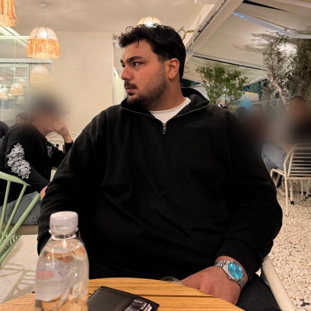
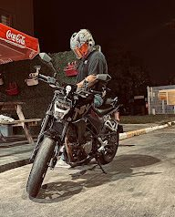
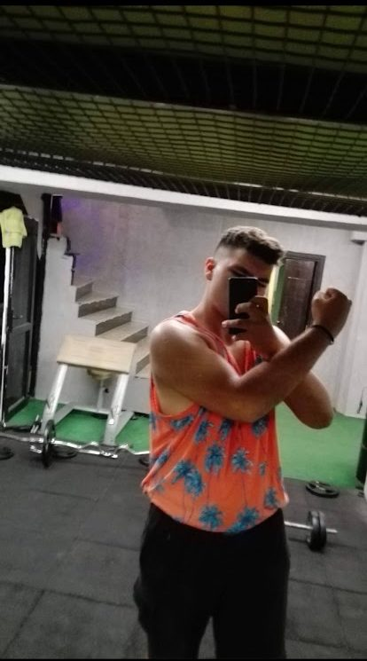
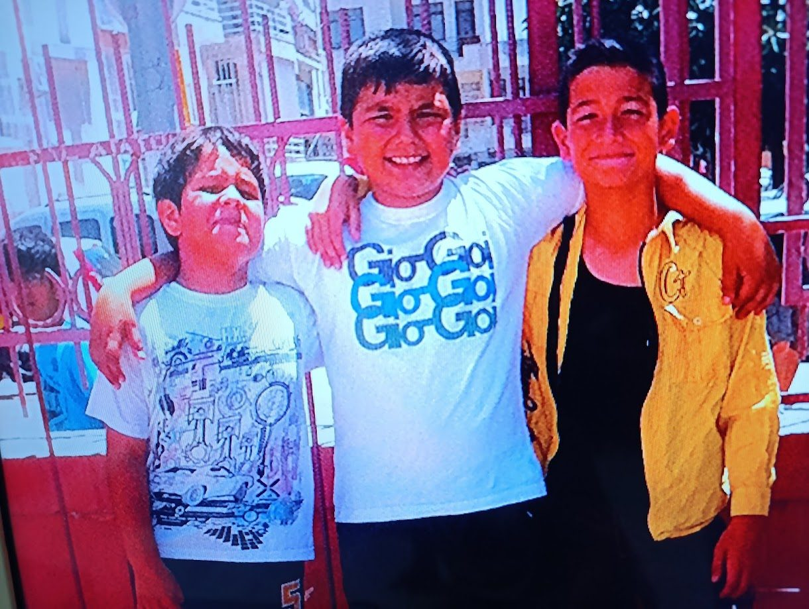
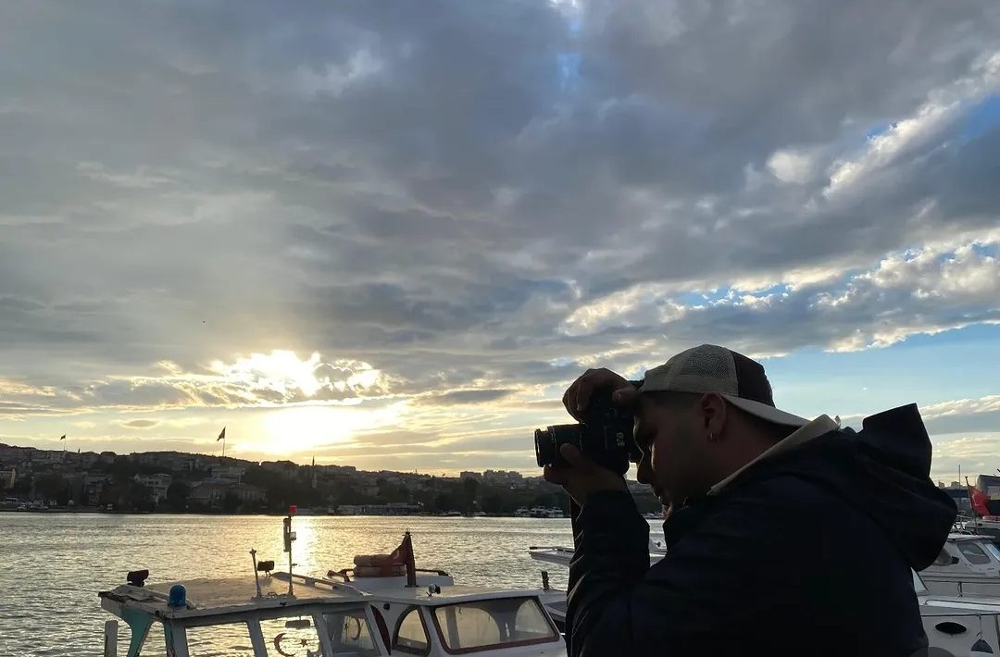
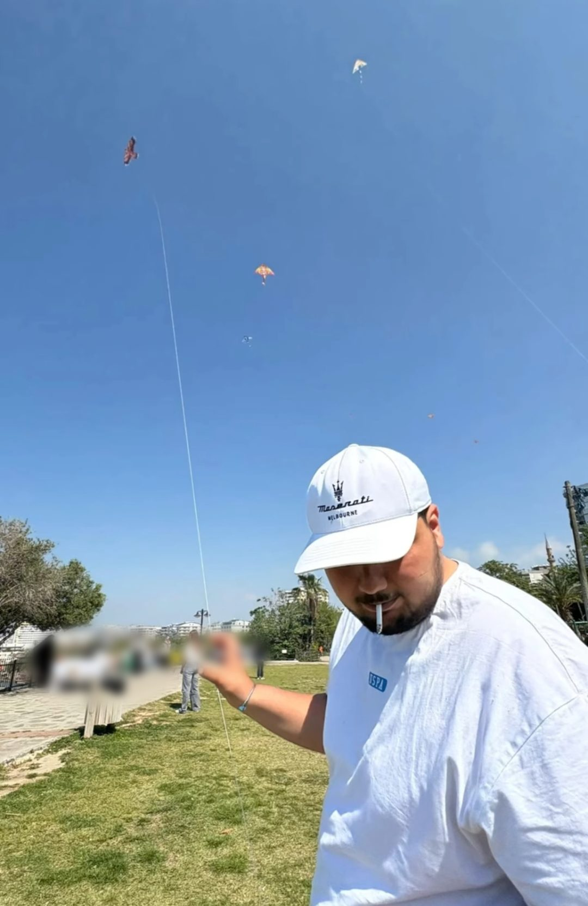
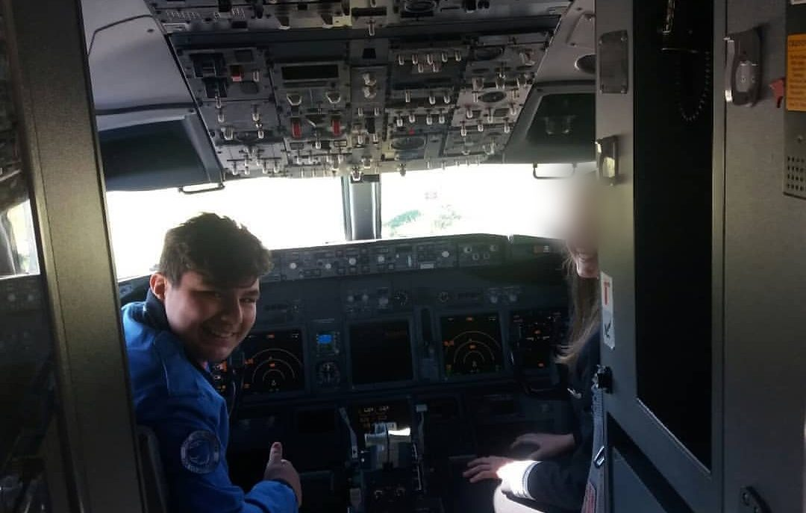

04 — Kareler04 — Frames
GaleriGallery
Beni en iyi anlatan kareler: gece yolları, şehir ışıkları, salon ve saha.The frames that describe me best: night roads, city lights, the gym and the court.
A10 KARE / FRAMESB








